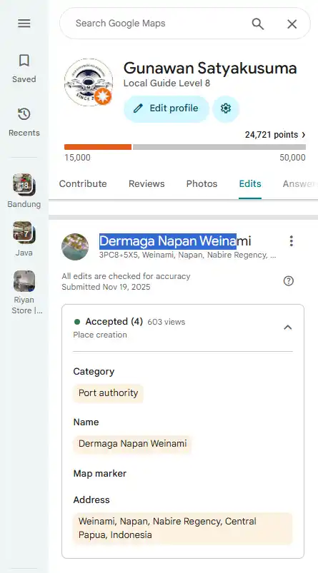

Dermaga Napan Weinami — Dari Ruang Fisik ke Entitas Digital
Catatan G-Loop tentang kelahiran sebuah identitas lokasi dalam ruang digital.
Sebuah tempat secara fisik dapat telah digunakan oleh banyak orang, tetapi belum tentu memiliki representasi yang jelas dalam ruang digital. Nama, lokasi, foto, koordinat, dan informasi aktivitas membantu membentuk konteks yang membuat sebuah tempat lebih mudah dikenali.
Dermaga Napan Weinami menjadi salah satu contoh yang digunakan dalam catatan G-Loop untuk melihat bagaimana sebuah ruang fisik dapat diterjemahkan menjadi informasi dan node dalam ekosistem digital.
Dari Aktivitas ke Data
G-Loop dimulai dari realitas lapangan. Sebuah dermaga digunakan karena memiliki fungsi nyata dalam aktivitas manusia.
-
```
- orang datang dan menggunakan dermaga,
- barang dapat diturunkan atau dinaikkan,
- perjalanan dapat dimulai maupun diakhiri dari lokasi tersebut,
- aktivitas masyarakat memberikan konteks terhadap keberadaan tempat. ```
Ketika aktivitas tersebut tidak memiliki dokumentasi atau informasi digital yang memadai, keberadaan fisiknya belum tentu memiliki representasi yang sama jelasnya dalam sistem digital.
Penamaan sebagai Identitas
Pemberian atau penggunaan nama membantu membedakan sebuah lokasi dari ruang lain di sekitarnya.
Nama tempat kemudian dapat dihubungkan dengan wilayah, koordinat, kategori lokasi, foto, serta informasi lain yang relevan.
Dalam konteks G-Loop, penamaan menjadi salah satu langkah untuk menerjemahkan ruang fisik menjadi informasi yang dapat dirujuk.
Foto sebagai Dokumentasi
Foto memberikan representasi visual terhadap lokasi. Dalam sebuah sistem informasi digital, visual dapat menjadi bagian dari konteks yang membantu manusia mengenali tempat yang sedang dibahas.
Foto tidak berdiri sendiri. Nilainya menjadi lebih kuat ketika memiliki hubungan dengan nama lokasi, waktu, posisi, dan informasi aktivitas yang relevan.
Data Lokasi dan Verifikasi
Informasi lokasi, koordinat, kategori, dan status pada platform digital dapat membantu membentuk representasi sebuah tempat.
Ketika informasi tersebut tersedia dan dapat diperiksa kembali, sebuah lokasi memiliki konteks digital yang lebih lengkap dibandingkan hanya berupa titik tanpa informasi.
Pin sebagai Simpul
Sebuah pin lokasi dapat berfungsi sebagai titik rujukan yang menghubungkan berbagai jenis informasi.
-
```
- referensi lokasi,
- dokumentasi visual,
- aktivitas masyarakat,
- informasi perjalanan,
- potensi aktivitas ekonomi lokal. ```
Dengan demikian, pin bukan hanya koordinat, tetapi dapat menjadi salah satu node dalam struktur informasi yang lebih luas.
Dari Ruang Menjadi Node Digital
Dalam perspektif G-Loop, proses tersebut dapat diringkas sebagai:
Intinya bukan menciptakan keberadaan sebuah tempat, tetapi menerjemahkan keberadaan yang sudah ada ke dalam struktur digital yang lebih mudah dirujuk dan dipahami.
Lokasi Dermaga Napan Weinami
Berikut adalah representasi lokasi Dermaga Napan Weinami pada Google Maps:
Hubungan dengan G-Loop Method
Contoh Dermaga Napan Weinami memperlihatkan salah satu prinsip dasar G-Loop Method: aktivitas nyata dapat menjadi sumber pembentukan informasi digital ketika dokumentasi, konteks, lokasi, dan distribusi saling terhubung.
Dalam kerangka yang lebih luas, proses tersebut dapat ditempatkan pada alur:
Pembahasan mengenai struktur metode dapat dibaca melalui G-Loop Method dan penjelasan struktur sistem dapat dilihat pada G-Loop Framework .